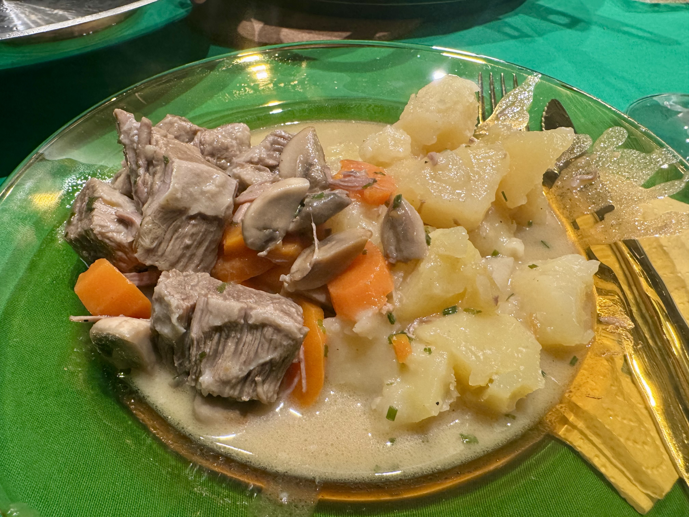

Blanquette de veau
Ingredients
- 1 kg de veau
- 3 l d'eau
- 4 carottes
- 2 oignons
- 0.5 poireau
- 3 gousses d'ail
- 2 branches de thym
- 1 feuille de laurier
- gros sel
- 60 g de beurre
- 60 g de farine
- 20 cl de crème liquide
- 1 citron
- 300 g de champignons de Paris
- 1 c. à s. d'huile de tournesol
- poivre
- 10 brins de ciboulette

Le grand classique de la cuisine française.
Préparation
Étape 1
Mettre 1 kg de veau (épaule, collier…) dans 3 l d'eau froide et porter doucement à frémissement, sans bouillir. Écumer.
Étape 2
Éplucher et couper en gros morceaux 4 carottes, 2 oignons et 0.5 poireau (le blanc). Écraser et dégermer 3 gousses d'ail.
Étape 3
Ajouter les légumes, 2 branches de thym, 1 feuille de laurier, du gros sel et le jus d’un demi-citron. Cuire 1h30 à feu doux.
Étape 4
Égoutter la viande et les légumes en gardant le bouillon.
Étape 5
Faire fondre 60 g de beurre, ajouter 60 g de farine et mélanger sans laisser colorer. Incorporer le bouillon petit à petit en fouettant, jusqu’à obtenir une sauce nappante.
Étape 6
Faire réduire de moitié le reste du bouillon et l’ajouter à la sauce.
Étape 7
Monter 20 cl de crème liquide en chantilly, ajouter le jus de l’autre moitié du 1 citron, puis l’incorporer à la sauce chaude, sans bouillir.
Étape 8
Laver rapidement et émincer 300 g de champignons de Paris. Les saisir à la poêle très chaude avec 1 c. à s. d'huile de tournesol, saler et ajouter du poivre.
Étape 9
Remettre la viande, les champignons et les carottes coupées en biseau dans la sauce. Parsemer de 10 brins de ciboulette ciselée.
Conseils
- Prendre le morceau le moins cher : épaule ou collier.
- Ajouter une pincée de piment d’Espelette dans la sauce.
- Remplacer la ciboulette par du persil ou de la coriandre, et zester un peu de citron au moment de servir.